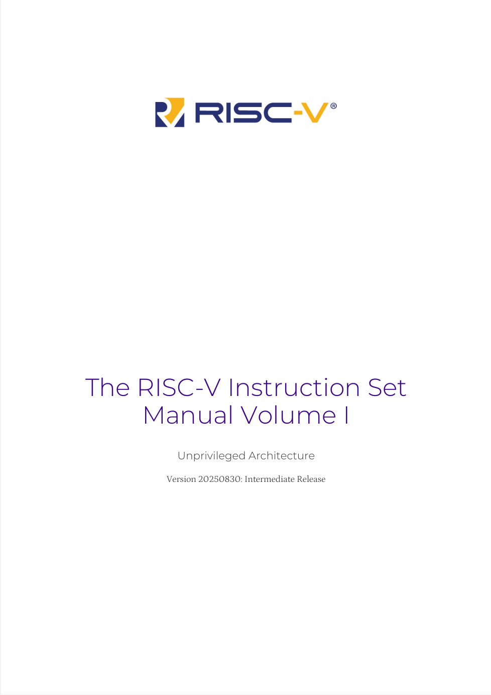
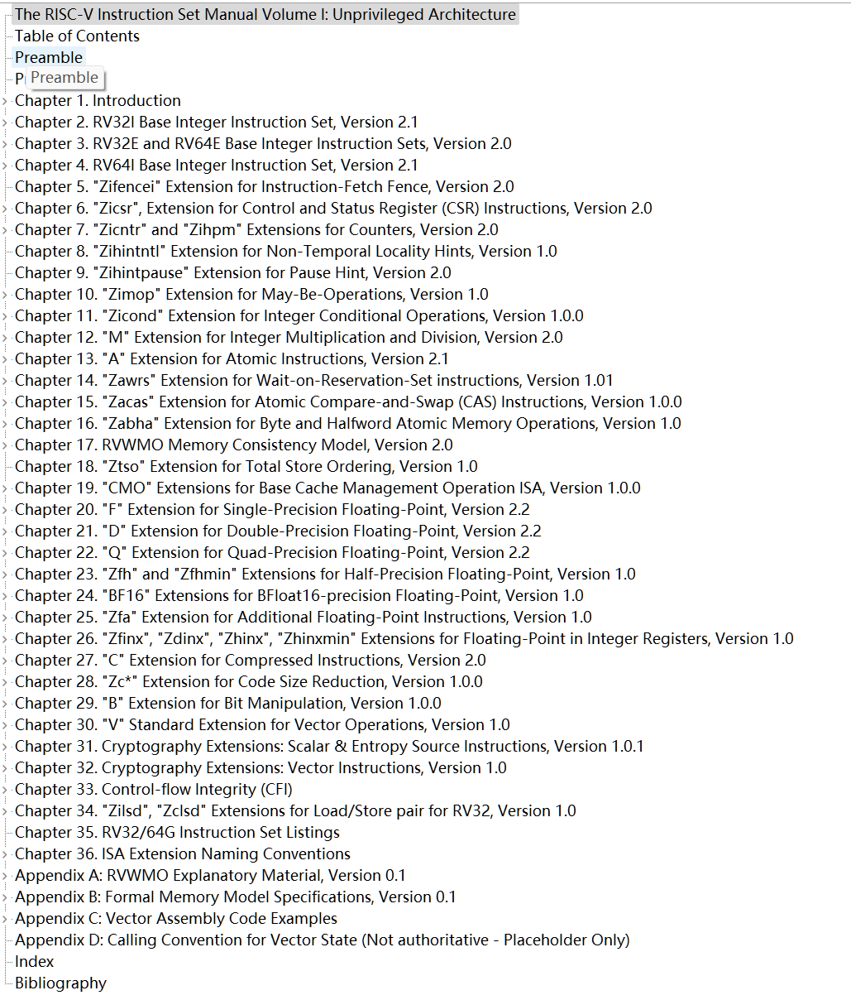
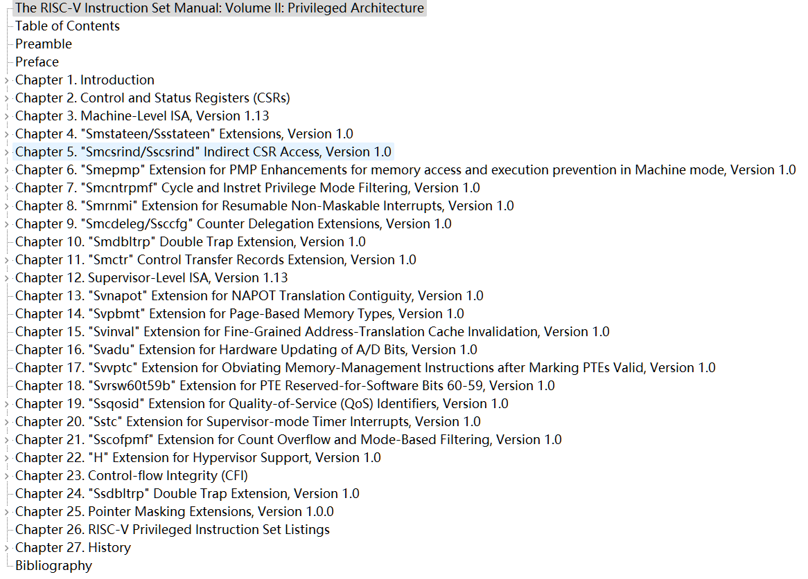

看看标准里都写了什么
|
 |
 |
|---|---|
|
 |
指令集的设计复杂度会影响什么
- 芯片的面积 => 产品的成本.
- 芯片设计和验证所需的人力和时间.
- 编译器后端设计的复杂度.
- RV64-IMA的指令数量只有 68条, 加上单双精度浮点扩展和短指令, 也仅仅在150条左右.
- 而armv7 的 指令数量大约在 300-400 条.
- 但是与 x86 的 2500+ 的指令数量相比呢.

指数级增长😂
回到正题 --- RISC-V

指令格式(2)

标识一条指令, 依次通过 opcode -> func3 -> func7 三级:
- opcode: 指令的类型, 决定了指令的基本操作, 以及指令的格式: 如寄存器算数运算, 分支运算, store, load...;
- func3: 决定了指令的具体操作: 算数{加/减/乘/除}, 访存(byte/half_word/word);
- func7: 指令的变体;